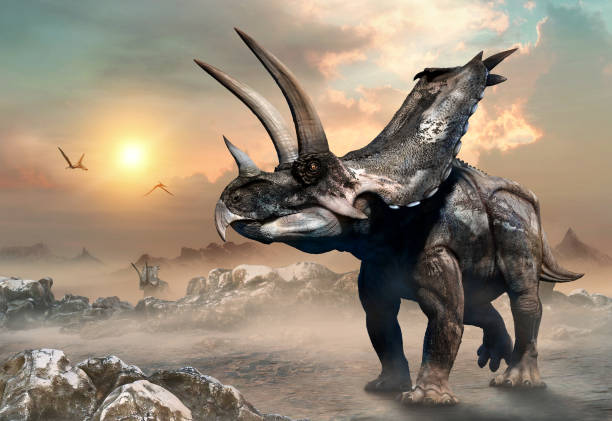

O Mundo dos Dinossauros

Sobre os Dinossauros
Os dinossauros foram animais que dominaram a Terra por milhões de anos. Eles variavam em tamanho, comportamento e hábitos alimentares, com espécies famosas como o Tiranossauro Rex, o Velociraptor e o Braquiossauro. Sua extinção, há cerca de 66 milhões de anos, foi causada por um impacto de asteroide e mudanças climáticas severas.
Algumas espécies famosas:
- Tiranossauro Rex
- O Tiranossauro rex foi um dinossauro carnívoro que viveu no final do período Cretáceo, há aproximadamente 66 a 68 milhões de anos, na América do Norte. É conhecido por seu corpo grande, cabeça maciça com uma das mordidas mais poderosas, e braços diminutos. Pesquisadores o consideram o principal predador de seu ecossistema, com uma dieta que incluía tanto caça quanto carniça. Características Físicas e Comportamentais Tamanho e Peso: Media cerca de 12 metros de comprimento e podia pesar entre 5 a 8 toneladas. Mordida: Possuía mandíbulas poderosas capazes de esmagar ossos e uma mordida com pressão de até 6 toneladas. Braços Curtos: Os braços eram pequenos em comparação ao corpo, mas a sua utilidade é debatida: podem ter sido usados para se levantar do chão, para o acasalamento ou como um remanescente evolutivo. Olfato e Visão: O T. rex tinha um olfato aguçado e uma visão superior à dos humanos, possivelmente capaz de ver luz ultravioleta. Dieta: Era um predador de topo e também pode ter se alimentado de carcaças. Velocidade: Atingia uma velocidade máxima de cerca de 19 a 27 km/h. Curiosidades Nome: Seu nome significa "lagarto tirano rei". Postura: No passado, o T. rex era frequentemente desenhado com uma postura semelhante à de um canguru. Contudo, a postura horizontal com a cauda como contrapeso foi reconhecida como a mais correta a partir dos anos 70. Pena: Filhotes de T. rex eram cobertos de penas, que eram perdidas com o tempo, restando apenas algumas na cabeça, pescoço e costas. Cultura Popular: O T. rex foi popularizado em filmes como Jurassic Park, onde a representação da sua postura horizontal é usada.
- Triceratops 
- O Triceratops foi um grande dinossauro herbívoro do final do período Cretáceo, conhecido por sua cabeça maciça com três chifres e uma grande gola óssea no pescoço, que usava para se defender e em exibições sociais. Com até nove metros de comprimento e pesando várias toneladas, ele se alimentava de plantas e arbustos, mastigando-os com seus múltiplos dentes. O T-Rex era seu principal predador, mas os chifres e a força do Triceratops o tornavam um adversário formidável. Características Notáveis Três chifres: Dois chifres longos e pontiagudos acima dos olhos e um chifre menor no focinho. Gola óssea: Uma grande e óssea gola na parte traseira da cabeça, que podia variar em tamanho entre os indivíduos e era possivelmente usada para exibição ou defesa. Bico e dentes: Um bico forte e fileiras de até 800 dentes para triturar plantas resistentes e arbustos. Corpo pesado: Era um animal robusto, com pernas fortes e musculosas para suportar seu grande corpo e se mover eficientemente. Ecossistema e Comportamento Habitat: Viveu na América do Norte durante o final do período Cretáceo, antes da extinção em massa dos dinossauros. Dieta: Era um herbívoro, alimentando-se de samambaias, cicadáceas e outras plantas de baixo crescimento. Comportamento social: Acredita-se que vivesse em bandos, com exibições sociais e possivelmente combate entre indivíduos utilizando seus chifres. Descoberta e Evolução Descoberta: Os primeiros fósseis foram encontrados em 1887, e o gênero Triceratops foi formalmente descrito por O.C. Marsh em 1889. Fósseis: Fósseis de Triceratops, como o famoso "Big John", são encontrados e estudados para entender melhor sua anatomia, comportamento e evolução. Ameaças Predadores: O Tyrannosaurus rex era o predador mais provável, e marcas de mordida de T-Rex foram encontradas em fósseis de Triceratops. Conflitos Intra-espécie: Evidências de ferimentos no crânio sugerem que os Triceratops lutavam entre si por hierarquia ou durante o acasalamento.
- Estegossauro
- O estegossauro foi um grande dinossauro herbívoro do período Jurássico Superior, conhecido pelas suas placas verticais nas costas e espinhos na cauda. Este dinossauro, que viveu há cerca de 150 milhões de anos na América do Norte, tinha uma dieta de plantas de baixo crescimento, um bico sem dentes e uma cabeça e cérebro pequenos. As placas serviam possivelmente para exibição e regulação da temperatura, enquanto a cauda com espinhos era uma arma para defesa contra predadores como o alossauro. Características: Placas e espinhos: O estegossauro é facilmente reconhecido pelas placas ósseas verticais ao longo do seu dorso e pelos quatro espinhos na ponta da cauda. Boca: Tinha um bico sem dentes, ideal para se alimentar de vegetação baixa como samambaias e cicadáceas. Tamanho: Podia atingir 9 metros de comprimento e tinha uma grande estatura, sendo um dos maiores dinossauros do seu tempo. Pequena cabeça: Apesar do tamanho do corpo, a sua cabeça e cérebro eram muito pequenos, comparáveis ao de um cachorro. Comportamento e Dieta: Herbívoro: Era um comedor de plantas, alimentando-se da vegetação baixa disponível nas planícies do Jurássico. Defesa: As longas pontas na cauda serviam como uma arma eficaz contra predadores que o ameaçavam. Exibição: As placas dorsais poderiam ter tido a função de exibir a espécie, por exemplo, para atrair um parceiro. Período e Local: Período: Viveu durante o período Jurássico Superior, aproximadamente entre 145 e 155 milhões de anos atrás. Local: Foi encontrado na América do Norte, nos atuais estados de Colorado, Utah e Wyoming.
- Velociraptor
- O Velociraptor era um predador ágil e carnívoro que viveu no final do período Cretáceo, com cerca de 1,8 metro de comprimento e menos de 23 kg, famoso pela garra em forma de foice no segundo dedo de cada pé e pelo crânio longo e estreito. Apesar de ter penas e semelhanças com aves, não voava, mas sua cauda rígida e ossos ocos o tornavam um corredor rápido e um caçador eficaz, com a capacidade de caçar em bandos e se alimentar de carniça. Características Físicas Tamanho: Era um dinossauro pequeno e leve, medindo cerca de 1,8 metro de comprimento. Penas: Tinha penas, não apenas para a plumagem, mas também para manter o calor corporal. Garra Mortal: A característica mais distintiva era uma grande garra retrátil em forma de foice no segundo dedo do pé, usada para atacar e prender a presa. Dentes: Possuía mandíbulas com dentes serrilhados em forma de adaga, adequados para rasgar carne. Cauda: Uma cauda longa, rígida e reforçada por tendões ossificados que agia como contrapeso para estabilidade ao fazer curvas bruscas e mudar de direção rapidamente. Ossos Ocos: Assim como as aves, possuía ossos ocos, uma característica que ajudava na sua leveza. Comportamento e Dieta Predador Ágil: Era um predador bípede, construído para a velocidade, com um cérebro grande e corpo ágil para uma caça eficaz. Caça em Bandos: Evidências sugerem que o Velociraptor caçava em bandos, permitindo que enfrentassem presas maiores como o Protoceratops. Dieta Variada: Além de caçar, também comia carniça, mostrando um comportamento semelhante ao de predadores modernos como leões e chacais. Comportamento Reprodutivo: É provável que chocasse seus ovos em ninhos e cuidasse deles, um comportamento similar ao das galinhas. Contexto Histórico e Científico Período: Viveu durante o final do período Cretáceo, há cerca de 75 a 71 milhões de anos. Localização: O primeiro fóssil conhecido foi encontrado no deserto de Gobi, na Mongólia. Relação com Aves: É um dromeossaurídeo e possui fortes relações com as aves, não só pela plumagem, mas também pela presença da fúrcula (osso da sorte).
- Diplodoco
- O Diplodoco foi um grande dinossauro herbívoro do período Jurássico Superior (cerca de 161 a 145 milhões de anos atrás), conhecido pelo seu corpo muito longo (até 27 metros), pescoço e cauda gigantescos, cabeça pequena e um peso de cerca de 12 a 30 toneladas, que o tornava um dos dinossauros mais longos do mundo. O nome "Diplodoco" significa "viga dupla", referindo-se a estruturas únicas em forma de bigorna na parte inferior das vértebras da cauda, possivelmente para proteger os vasos sanguíneos. Características Físicas Tamanho e Forma : Podia atingir cerca de 27 metros de comprimento, com um pescoço longo e uma cauda muito longa e fina que usava como chicote para se defender. Cabeça Pequena : Possuía uma cabeça pequena, com dentes em forma de pino na frente da boca, que eram usados para arrancar a casca de árvores e plantas. Estrutura Óssea : A estrutura oca das vértebras o ajudava a ser mais leve, e a cauda possuía estruturas chamadas "chevrons", que lhe deram o nome. Patas : Tinha patas semelhantes às de um elefante, com três garras nas patas traseiras. Dieta e Comportamento Herbívoro : O Diplodoco era um animal herbívoro que se alimentava de plantas aquáticas, ramos de árvores altas e vegetação rasteira. Digestão : Como outros saurópodes, ele pode ter engolido pedras para ajudar na digestão das fibras vegetais resistentes em uma moela, como as galinhas fazem. Cauda como Arma : A cauda longa e fina era usada como chicote, e a velocidade de sua ponta poderia ser muito alta, tornando-a uma arma mortal contra predadores. Contexto Histórico Período : Viveu na América do Norte durante o Período Jurássico Superior, há aproximadamente 161 a 145 milhões de anos. Parentes : Faz parte da família Diplodocidae, que inclui outros dinossauros com pescoços e caudas longos, e são classificados como saurópodes.
- entre outros


Fonte das informações: https://pt.wikipedia.org/wiki/Dinossauro Wikipedia
Contato: sarah2008ti@gmail.com
© 2024 - O Mundo dos Dinossauros